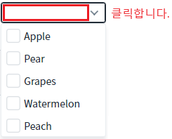
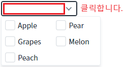
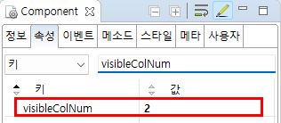

CheckCombobox의 'visibleColNum' 속성을 사용하여, 목록의 열의 수를 설정하는 예제입니다.
기본 설정
목록을 2개의 열로 출력하기
예제 영역 '(기본 설정) 미설정'에 구성된 CheckCombobox에서 테스트합니다.
목록을 확장합니다. 항목이 1개의 열로 표시됩니다.
Image 1.브라우저(Chrome) 실행 예시 - 기본 설정 - 목록이 1개의 열로 표시

예제 영역 '목록의 열을 "2"로 설정'에 구성된 CheckCombobox에서 테스트합니다.
목록을 확장합니다. 항목이 2개의 열로 표시됩니다.
Image 2.브라우저(Chrome) 실행 예시 - 기본 설정 - 목록이 2개의 열로 표시

컴포넌트의 속성을 정의합니다.
[필수] visibleColNum="2"
//목록의 열의 개수로 기본 값은 '1'입니다.
이 속성이 설정된 경우 'visibleColMax' 속성은 무시됩니다.
Image 3.웹스퀘어 스튜디오의 Component View 예시

Example 1.Source
<!-- CheckCombobox의 소스 본문 예시 --> <xf:checkcombobox visibleColNum="2"> <!-- 중략 --> </xf:checkcombobox>
visibleColNum